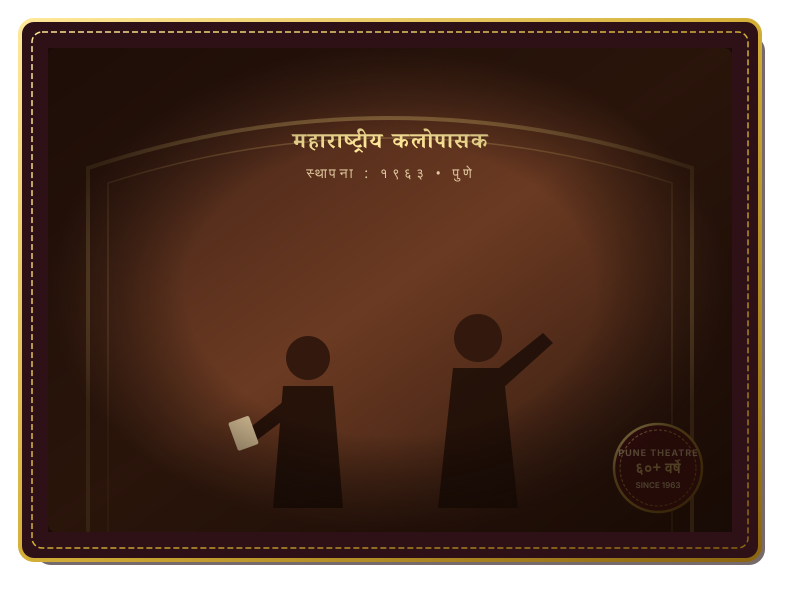

आमच्याबद्दल
महाराष्ट्रीय कलोपासक: ६० वर्षांचा ऐतिहासिक प्रवास

नाट्य चळवळीची मुहूर्तमेढ (१९६३)
महाराष्ट्रीय कलोपासक संस्थेची स्थापना १९६३ मध्ये पुणे येथे झाली. महाविद्यालयीन विद्यार्थ्यांना त्यांच्या कलागुणांचे सादरीकरण करण्यासाठी एक निष्पक्ष आणि दर्जेदार व्यासपीठ मिळावे या उदात्त हेतूने संस्थेचे कार्य सुरू झाले.
संस्थेने सुरू केलेला 'पुरुषोत्तम करंडक' हा महाराष्ट्रातील एकांकिका चळवळीचा मानबिंदू ठरला. या स्पर्धेने मराठी रंगभूमीला, चित्रपट सृष्टीला आणि साहित्याला असंख्य प्रतिभावान दिग्दर्शक, अभिनेते आणि लेखक दिले.
आज ६ दशकांनंतरही ही संस्था त्याच उत्साहाने आणि पारदर्शकतेने नवीन पिढीतील नाट्य प्रतिभेला घडवण्याचे कार्य अविरत करत आहे.